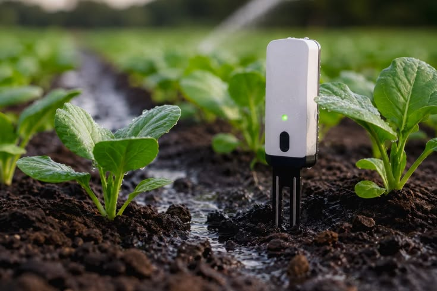
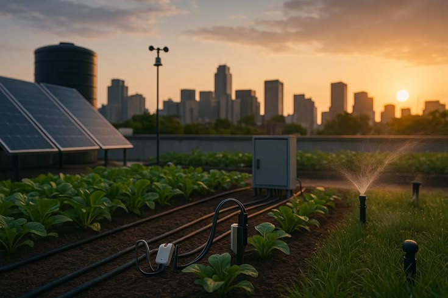
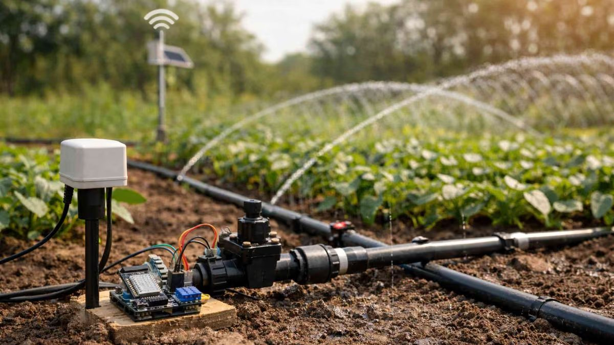
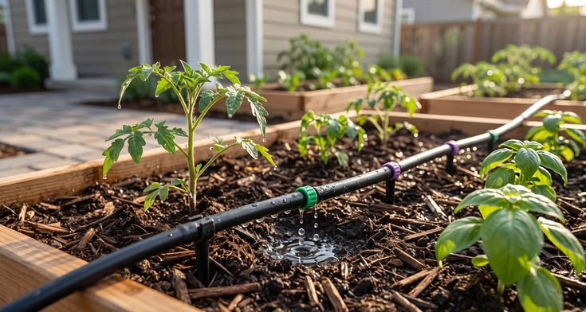
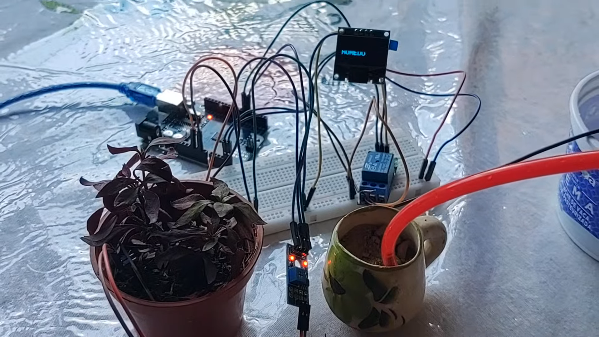
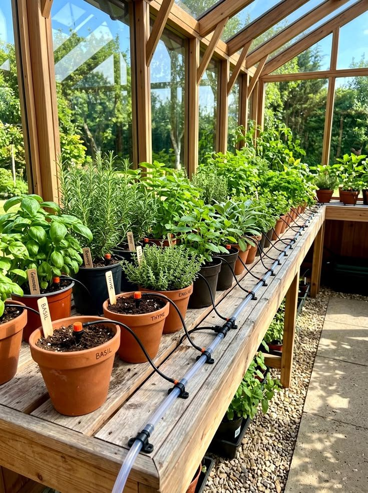
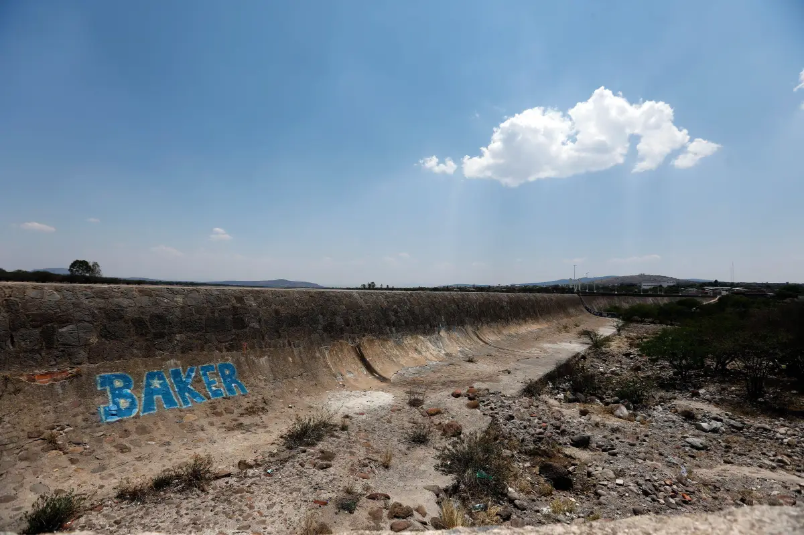
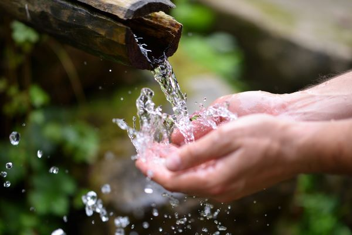
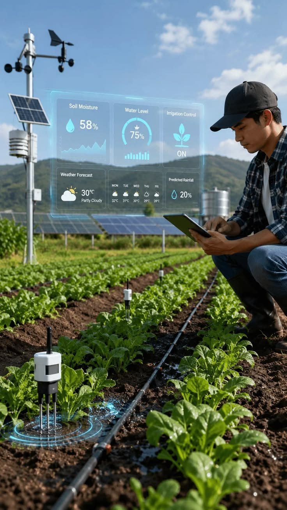

El sensor mide
Una sonda se clava en la tierra y mide qué tan húmeda está en ese momento.
Un sistema con Arduino que mide la humedad del suelo y decide cuándo regar. Proyecto académico de ingeniería.
El agua es limitada y el campo la necesita. Por eso este prototipo riega únicamente cuando el suelo está seco y se detiene cuando ya hay suficiente humedad.

Tres pasos que se repiten solos, sin que nadie tenga que estar regando.

Una sonda se clava en la tierra y mide qué tan húmeda está en ese momento.

Un Arduino compara la lectura con un nivel establecido. Si el suelo está seco, espera unos segundos para confirmar que no fue una lectura falsa y entonces ordena regar.

Un relé enciende la bomba mientras el suelo está seco y la apaga cuando la humedad es suficiente, para no desperdiciar agua. Una pantalla muestra siempre el estado.
Según datos de AQUASTAT, de la FAO, en 2022 el sector agrícola representó el 71 % de las extracciones mundiales de agua dulce (iAgua, 2025). Regar solo cuando hace falta importa.


Es una idea de crecimiento del proyecto; el prototipo actual es académico.
El agua y el campo, en la conversación actual.



Así se ve un sistema de riego y los elementos que lo forman.

Usuario Software Firmware HardwareImagen: [escribe aquí el crédito o la fuente].